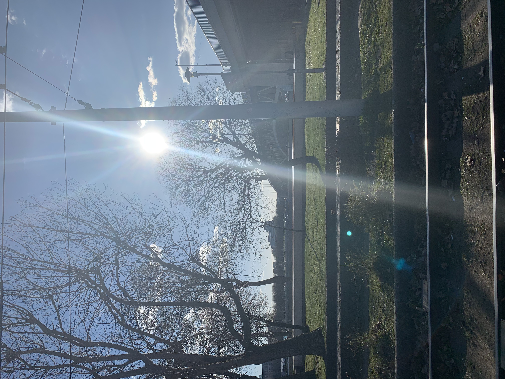

Egész életemben Budapesten éltem; a IV. kerületben születtem, majd 2 évig belekóstoltam a panellakás szépségeibe is a XV. kerületben. Amióta az eszemet tudom, a 17-ben lakom családommal, ide jártam óvodába, iskolába, gimnáziumba is. Aztán jött a változás. Az egyetem miatt napi 2,5 órát utazom, ami elsőre soknak tűnik, azonban teljesen “kinyílt a világ” számomra, és olyan részeit ismertem meg Budapestnek, amelyekről gondolni sem mertem volna, hogy ilyen különlegesek. Járókelőként egy teljesen más oldalról látom a várost, és igyekszem is mindig megörökíteni a helyeket, amelyek nagy hatással vannak rám, így az oldalon kizárólag saját készítésű képeket használtam fel. A blog főleg a saját tapasztalataimat dolgozza fel, valamint igyekszem rávilágítani arra, hogy az apró dolgokban is mennyi szépség rejlik: hogy tudatosabban utazva egy teljesen más élményben lehet részünk.
És ott állunk majd kéz a kézben
Vagy ülünk a Szabadság hídon
Te bármerre mennél csak el innen
S én azt mondom majd, hogy nem tudom
De van ez a város
Van ez a város
Vagyunk lakói
Neve is van, Budapest
4Bards - Van ez a város
Te melyik budapesti közlekedési eszköz lennél? Töltsd ki a kvízt, és olvass tovább a Közlekedés oldalon
Teszt kitöltése
"A vonatállomáson álltam, Budapest határán, épp magára hagytam volna a várost egy hétvégére, hadd pihenjen egy kicsit. A fülemben zene szólt, hogy olyannak láthassam a peront, amilyennek én akartam. Egy bácsi lépett hozzám, és nem kéregetett, sőt adni kívánt. Egy fülesbaglyot. A vállam kopogtatta meg, olyan vidékiesen. „Ott egy fülesbagoly szemben. Ön, úgy tűnt, mint aki örülne egy fülesbagolynak." És én örültem is, hazavittem Budapestből egy bagolynyi darabot. Nem mondtam el neki, hogy a kelenföldi madár imposztor, kőből van, mert a szívem nem, és azt hiszem, hallani véltem a bácsi felől a szárnysuhogást.
100 szóban Budapest 2020, írta Dubán Kitti